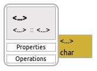
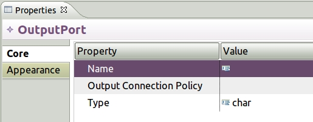

Adding an OutputPort
This is how a TaskContext with an
OutputPort looks like when it is first created in the model
diagram:

The easiest way to add a OutputPort or any other model
element is to select, drag and drop the element from the
Palette to the diagram.

- Select a OutputPort.
- Drag to the diagram.
- Drop the OutputPort on the diagram.
- Select the OutputPort in the diagram.
- Open the Properties View.

- Select the Value cell for
Name and type the OutputPort name
(e.g. Calculated Velocity).
- Do not select the Value cell for
Output Connection Policity. This value will be set once
the port is connected to another port using a ConnectionPolicy.
- Selext the Value cell for Type and
select from the drop down the C++ type of for the port. (e.g.
float).
- Save your work.